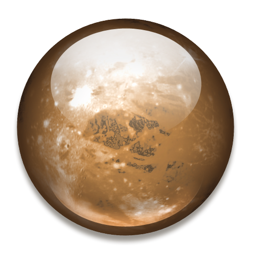

|

` Сонце

Меркурій

Венера

Земля

Місяць

Марс

Юпітер

Сатурн

Уран

Нептун

Плутон
|
Уран
 У стародавніх римлян Уран був богом неба. Відстань до Сонця – 2868,1 млн. кілометрів. Хоч ця планета булла відкрита Вільямом Гершелем ще в 1781 р., Але про неї було мало що відомо поки «Вояджер 2» не пролетів повз планету у 1986 р., через 4,5 року після відвідання Сатурна.
У стародавніх римлян Уран був богом неба. Відстань до Сонця – 2868,1 млн. кілометрів. Хоч ця планета булла відкрита Вільямом Гершелем ще в 1781 р., Але про неї було мало що відомо поки «Вояджер 2» не пролетів повз планету у 1986 р., через 4,5 року після відвідання Сатурна.
Уран – третя за величиною планета, вона в 4 рази більша за Землю. Газоподібна планета має атмосферу, схожу на атмосферу Юпітера і Сатурна — в основному складається з водню, гелію, аміаку, метану. Метан надає Урану блакитно-зеленуватого забарвлення. Температура на рівні хмар — 200 °С.
 Вісь Урана — не центр планети, вона нахилена більше ніж у інших планет — під кутом 12°. Період обертання Урана навколо Сонця — 84 роки. В результаті північний полюс Урана обернений до Сонця протягом 42 років — там день. Потім те ж саме відбувається на південному полюсі. Дні на Урані короткі — ледь більше 17 земних годин.
Вісь Урана — не центр планети, вона нахилена більше ніж у інших планет — під кутом 12°. Період обертання Урана навколо Сонця — 84 роки. В результаті північний полюс Урана обернений до Сонця протягом 42 років — там день. Потім те ж саме відбувається на південному полюсі. Дні на Урані короткі — ледь більше 17 земних годин.
«Вояджер 2» визначив, що Уран оточений, у крайньому випадку, 11 темними кільцями і на його орбіті не менше 15 кам'яно-льодяних супутників. Ця планета дає загадковий ультрафіолетовий блиск, що називається «електросвітінням», її гравітація дещо сильніша земної.
|